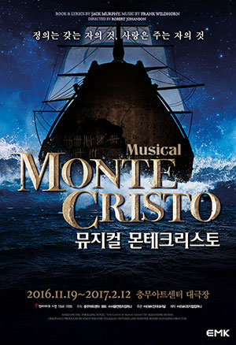

정의는 갖는 자의 것, 사랑은 주는 자의 것
선물할게끔찍한 지옥을
너희들에게
기대해도 좋을걸
나의 심판을
나보다 더 참혹한 고통
겪게 해줄게
어서와 기다릴게
지옥의 문앞에

줄거리
1814년, 지중해에서 항해를 마치고 돌아오던 파라온호는 엘바섬에 정착하는데 그 섬에는 전쟁에서 패배한 나폴레옹 보나파르트가 유배되어 있다. 나폴레옹은 경비병들의 눈을 피해 에드몬드에게 편지를 건내주는데 그 편지는 추후 에드몬드의 운명에 큰 파장을 일으키게 된다.
파라온호의 귀향을 기다리며 마르세이유 마을 사람들은 파티 준비를 한다. 에드몬드는 선장 자리에 임명되고 약혼녀인 메르세데스와 약혼식이 열리는 가운데 경찰들이 들이 닥치게 된다. 나폴레옹의 밀서를 전달하려는 누명을 쓰게된 에드몬드는 누명을 벗지 못하고 감옥 샤또 디프에 투옥된다.
에드몬가 체포된 배후에는 선장자리를 노리던 당글라스, 메르세데스를 흠모해온 몬데고, 그리고 자신의 아버지가 나폴레옹과 밀서를 주고받으려고 했다는 사실을 은폐하려는 빌포트 세 사람의 공모가 있었다.
감옥에서 절망적인 나날을 보내던 에드몬드는 우연히 다른 감방에 수감되어있던 괴짜 신부 파리아를 만나게 된다. 파리아 신부는 탈옥 계획에 에드몬드를 끌어들이고 에드몬드에게 자신이 가지고 있는 지식을 모두 알려준다. 에드몬드는 파리아 신부의 도움으로 자신이 누명을 쓰게된 경위와 배우를 깨닫게 되고 복수의 칼날을 간다. 두사람은 함께 탈옥하려 했으나 파리아 신부가 도중에 부상을 입고 사망하게 되어 에드몬드만 탈출하게 된다. 바다에 표류 하던 에드몬드는 해적선에 구조 된다. 에드몬드가 해적들중 가장 힘이 센 자코포를 이기게 되어 그들과 어울리게 되었고 해적들와 에드몬드는 어마어마한 보물이 숨겨져 있다는 몬테크리스토 섬을 향해 간다. 몬테크리스토 섬에서 보물을 얻게 된 에드몬드는 자신의 신분을 몬테크리스토 백작으로 바꾸고 새 인새을 시작할 것을 결심한다.
그렇게 몬테크리스토 백작의 복수가 시작 된다.
착각은 마
정신차려
나는 그가 아냐
지하 감옥 속에서 죽어버렸지
착각은 마
정신차려
그는 이미 죽었어
죽어서 잊혀졌지
그가 믿고 사랑하던
그 사람들에게
감상
올해 1월 4일에 충무아트센터 대극장에서 하는 뮤지컬 몬테크리스토를 보고왔었다.
이게 네번째로 보는 뮤지컬이였다.
고등학생때 처음으로, 좋아하는 아이돌이 뮤지컬을 한다고 해서 보러갔었는데 그게 계기가 되서 가능하다면 공연을 많이 보러가고 싶단 생각을 하게 됐다. 그래서 시간과 돈의 여유만 있다면 보러가야지 하는 생각과 함께 몬테크리스토를 예매했다. 사실은 몬테크리스토도 계기는 아이돌이 였지만-
첫글이라 어떤걸 써야할까 고민을 했는데 영화나 만화의 평을 쓰는 것처럼 줄거리를 넣는게 의미가 있을까 싶었다. 나는 몬테크리스토를 안읽어봐서 내용을 잘 몰랐지만 대게 창작뮤지컬이 아니고선 유명한 작품들이 배경이 되기 때문에 줄거리를 구구절절 늘어놓는건 별 의미가 없을거란 생각이 든다. 그렇다고 아예 안하고 갈 수는 없으니 하자면, 내용만 본다면 별로였다. 사실 메르세데스가 노래하는걸 듣자마자 메르세데스가 노래하는 것말곤 크게 관심이 없었다. 배우분이 린아 였는데 이전에 전상지희였다는거 알고 놀라고...
다시 내용으로 돌아가자면 끝에 반전들이 너무 갑작스러운 것들도 많고, 시간을 맞추기 위해 그 안에 다 쑤셔넣어 버린 듯한 느낌?? 애초에 복수극을 다루는 작품중 흥미롭게 본 작품은 없었던거같다. 후기를 몇개 찾아봤는데 아침드라마같았다고 하시는 분들도 꽤 있었다.
그리고 처음으로 3층에서 봤는데, 좌석은 좁고 쏟아져 내릴거 같은 느낌때문인지 공연을 보는 내내 제주항공 타고 착륙하는 기분이였다. 2층은 괜찮다는 글도 봤는데 2층과 3층의 차이가 큰건가.. (그러니 가격차이도 있는 거겠지만... 그래도 앉아서 볼만하게는 만들어 놔야하는거 아닌지;-;) 다시는 충무아트센터 3층에선 안볼거라고 다짐하고 나왔다. 좌석은 너무 좁고 무대는 맨앞부분은 이미 가려져 있어서 그 쪽에 배우분이 안서계실걸 알아도 보기 불편하고 거기에 더불어서 앞사람들이 자꾸 숙여서... 인터미션 때에도 다른분들 클레임들어와서 계속 주의주시고 헣.. 오랜만에 뮤지컬봐서 신나긴 신났는데 여러모로 불편했다.
하지만 이때 3층에서 보고난 뒤로 공연장 들의 좌석마다 차이가 궁금해지긴 했다. 앞으로 계속 뮤지컬을 보러 다닌다면 알게 되겠거니 싶었지만.